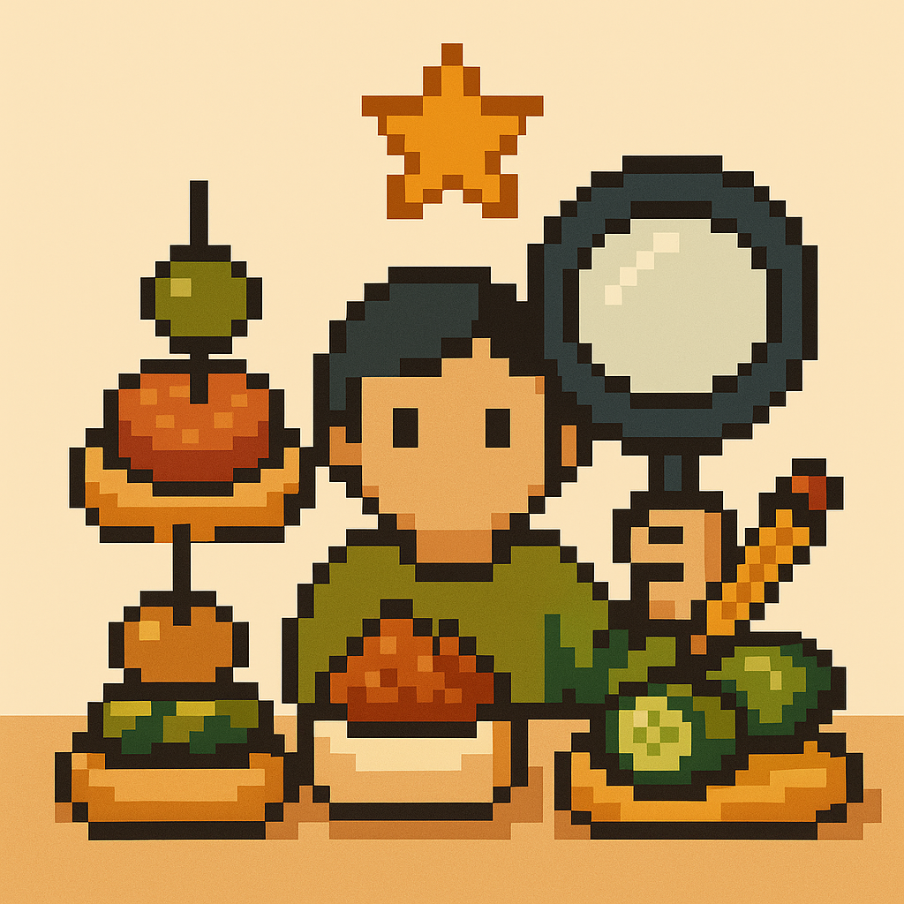
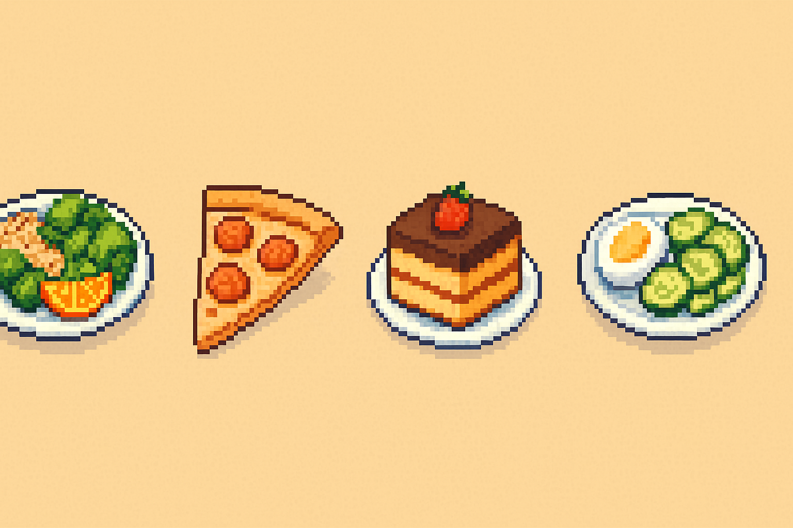
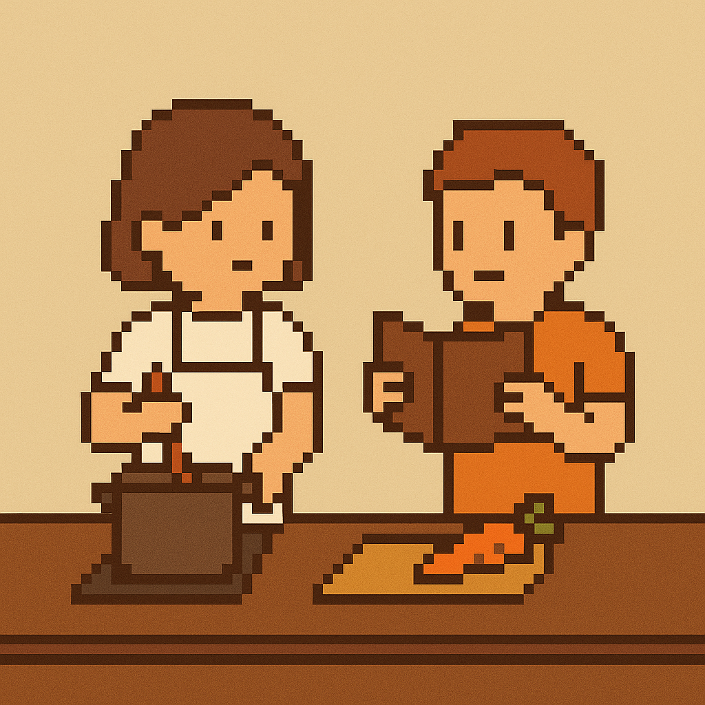
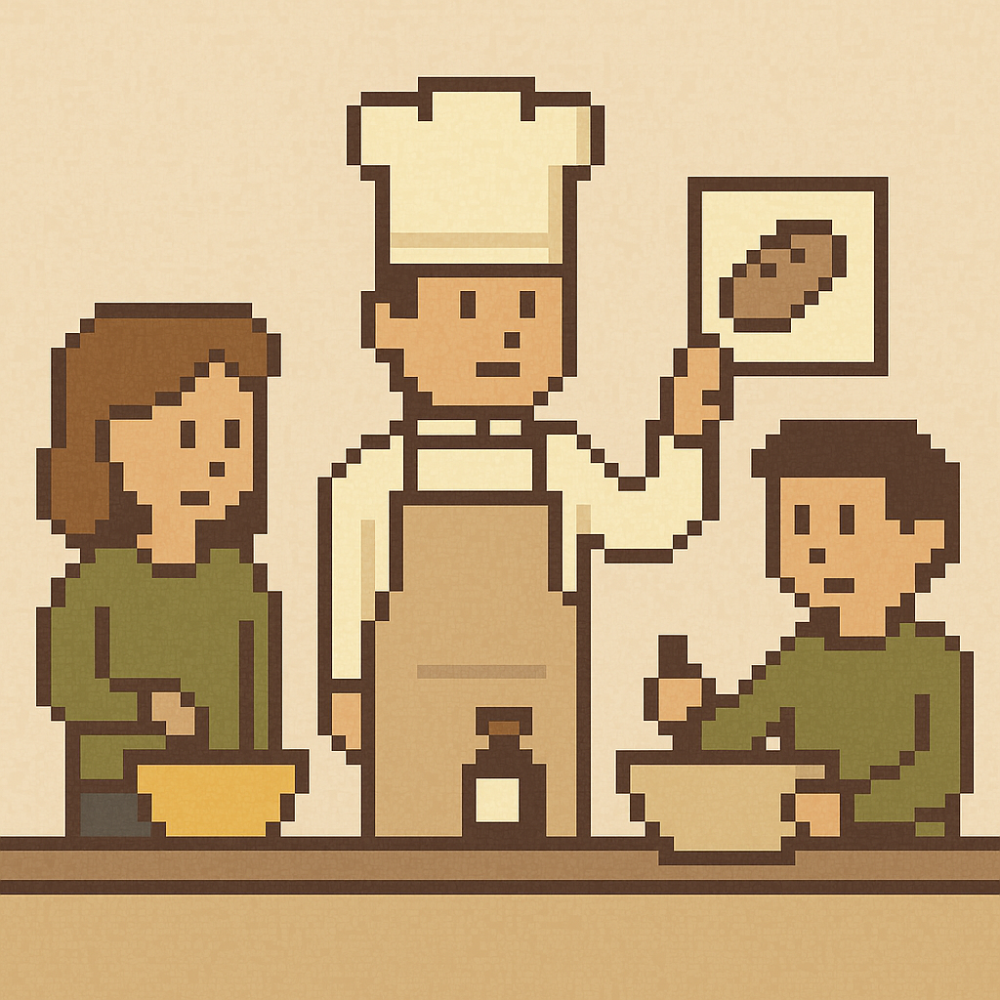
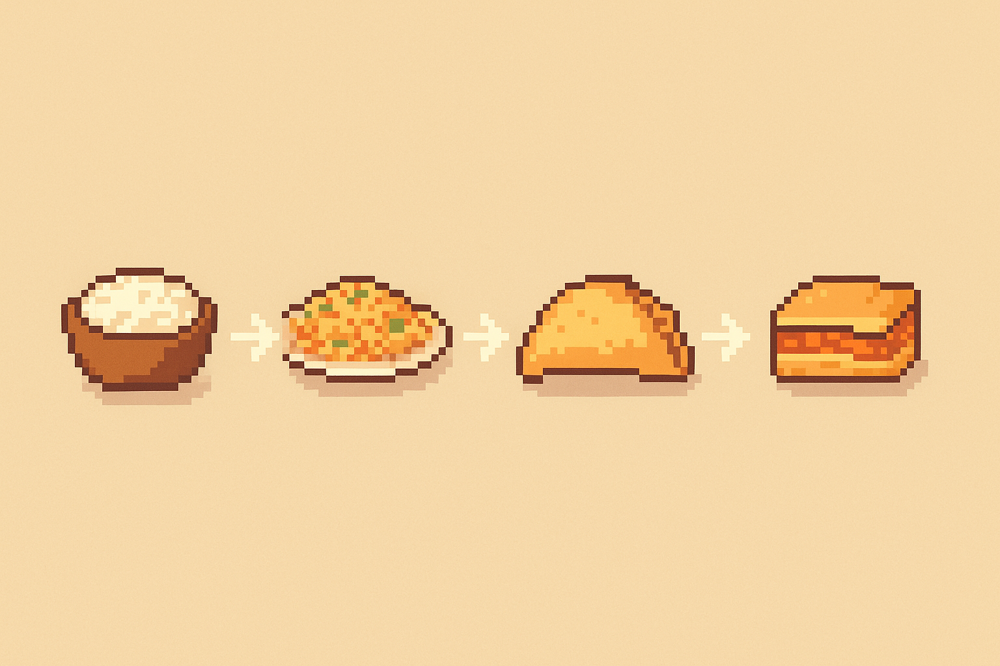

Cocina colaborativa y motivacional
Cocinar juntos es más que preparar comida: es compartir, aprender y disfrutar. Este espacio busca fomentar hábitos saludables en jóvenes a través de dinámicas prácticas, divertidas y creativas.

Concurso de pintxos
Mini recetas en grupo con ingredientes caseros. ¡Creatividad al poder!

Reto semanal temático
Un tema nuevo cada semana: vegano, de temporada... ¡y vota al chef de la semana!

Cocina en parejas
Repartid roles y cocinad por turnos. Ideal para familias o amigos.

Talleres caseros
Aprende pan, salsas o cocina exprés con ingredientes simples.

Recetas encadenadas
Empieza una receta y deja que otro la transforme. ¡Creatividad en cadena!